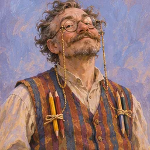
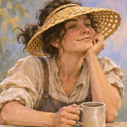

Разумные бытовые чары Дзеньгорода отправились на давно согласованные трёхдневные выходные. Именно сейчас город готовит День открытых дворов. Кто придержит дверь, когда дверь загорает? Герои принимают дежурство, разбирают неожиданные происшествия и решают, какие обещания действительно можно выполнить. Заклинания самих героев работают как обычно.

Если партия изменила план
Перед чтением вступления сверьте место героев, присутствующих людей и предметы с итогом прошлого вечера. Если условия встречи отпали, сыграйте последствия там, где находится партия. Событие по расписанию может произойти за кадром. Герои узнают о нём от тех, кто был на месте.
Вечер 7. Если организаторы отменили праздник до прихода гостей
Спросите, кто получил известие и кто ещё в дороге. Начните следующий вечер у первого двора, куда всё же придут. Стол решает, чем там реально могут помочь, и отмечает тех, кому ещё нужно передать весть.
Группа отказалась от задания
Возвращать магов с отпуска не станем. Берём одну дневную смену у двора. Записываем границы только добровольной смены. Двор доживает до вечера своими силами. Отпуск длится обещанные три дня независимо от числа выполненных поручений.
Игроки раскрыли тайну раньше
Расспросим дежурных о ленте трёх солнц и проверим отметку законченной смены. Доступные свидетельства — Лента с тремя солнцами, Лента законченной смены. У бытовых чар согласованные три выходных. До утра четвёртого дня сменить добровольца можно передачей конкретной задачи. Сверяем с соседями дату возвращения чар. Выясняем, что отпуск согласован. Распределяем ручную работу лишь между согласившимися; расследовать похищение больше незачем.
Партия уступила поле
Козы унесли банты, шествие выходит без них. Выделяем дежурного для работы, которую ещё можно закончить руками. Приглашаем зрителей на один настоящий полдень с обычными лентами. Пропавшие банты остаются поводом для завтрашних поисков.
За десять минут до первой игры
- Откройте первый вечер, прочитайте правду мира и участников. Остальные вечера — планы, их исход решают игроки.
- Выберите пакет под фактическое число игроков. Первые три героя — готовое ядро; остальные добавляются по порядку. Возраст игрока не определяет героя.
- Согласуйте темы, длительность и сигнал паузы. Передайте игрокам только players.html; раздатки выдавайте по отдельности после указанного открытия.
- Откройте Мастерскую проекта, создайте личный черновик и импортируйте выбранный JSON через загрузку пакета. Проверьте состав и начало в предпросмотре. Запуск кампании подтверждает ведущий штатным действием.
- Откройте иллюстрацию завязки отдельно. Портреты героев входят в файл для игроков, портреты встречных — в книгу ведущего. Тактические схемы доступны в разделе карт.
Формат и темы
8 вечеров; 150 минут: вступление и повторение 10, три сцены по 40, перерыв 10, завершение 10. Восемь встреч охватывают три дня внутри истории.
В Дзеньгороде живут люди, полурослики, гномы и самостоятельные чары: например, заклинание вежливого порога носит медную ручку как трость. Чары не пленены в предметах; они умеют уходить из привычных чайников, щёток и навесов. Их отпуск согласован ещё весной, обычные вещи остаются исправными. Личные классовые заклинания, способности и отдых героев действуют по обычным правилам. Один личный эффект помогает в конкретном месте в пределах своих правил; он не обеспечивает бессрочное обслуживание всего города.
Подвижная комедия положений с серьёзным уважением к чужому удобству. Мокрые шляпы, неверные очереди и упрямые козы смешны; возраст, инвалидность и просьба отдохнуть — нет.
- Праздник как совместное действие
- Приоритеты при ограниченных силах
- Право отдыхать и право попросить помощь
- Честное обещание вместо показной безупречности
Границы
- 12+, подростки и взрослые за одним столом; без сексуального содержания, жестоких травм, унижения обслуживающих работников и угроз детям.
- Перед началом каждый называет нежелательные темы письменно или вслух; знак паузы останавливает сцену без объяснений. Перемотка или пропуск доступны всем.
- Не превращайте жажду, усталость, доступность прохода и медицинские нужды в шутку или плату за провал. При неудаче есть обычная помощь соседей, а цена касается программы, вещей и репутации.
- Не отбирайте классовую магию и не принуждайте отдыхающие чары к работе. Никакой обязательной драки, смертельного исхода, голосования совета или единственного верного размера праздника.
Люди за столом
- В начале каждой сцены меняйте первого говорящего по кругу. Возраст не назначает лидера и не определяет класс персонажа. Можно предложить действие устно, запиской или передать очередь; взрослый не завершает выбор подростка без приглашения.
- Давайте два равноценных входа: конкретное действие «кому сейчас передать кувшин?» и более глубокий вопрос «какое обещание придётся сократить?». Любой игрок выбирает любую глубину; простое действие способно изменить исход.
- Трое первых героев образуют достаточное ядро, но любую задачу может выполнить любой герой. Нужные сведения доступны через наблюдение, просьбу или обычное действие. Никакая сцена не требует класса, заклинания либо героев четвёртого–восьмого места.
- При разделении на группы сначала соберите по одному намерению от каждого, затем разрешите общий пакет действий с короткими переключениями. Возвращайте всех к крыльцу, фонтану или названному столу в конце сцены; не ведите отдельную длинную встречу для одной половины стола.
- В группе 6–8 делите конкретное происшествие на контакт с людьми, физическую помощь и проверку результата. Во второй половине сцены меняйте занятия. Число людей за столом не увеличивает число обязательных происшествий.
- При отсутствии игрока его герой спокойно отдыхает либо выполняет уже согласованное обычное поручение без новых решений. В начале следующей встречи он получает три открытых факта и выбирает незанятую роль; не теряйте ключевую улику вместе с персонажем.
- Перед переходом времени ведущий называет наблюдаемое изменение и даёт закончить заявленные действия. Любые счётчики здесь только описывают вымышленные события. Проверки и последствия разрешает ведущий; исходные материалы не изменяют канонический мир автоматически.
- Все готовые герои используют поддерживаемые классы третьего уровня; бытовая роль — художественное описание. Личную магию оценивайте по обычным дальности, длительности, ресурсам и целям. Законное применение, решившее конкретную задачу целиком, засчитывается целиком. Между встречами нет автоматического восстановления ресурсов: длительный отдых проходит по обычным правилам в конце каждого из первых двух игровых дней, с доступным спокойным местом для сна.
Масштабирование группы
3 игрока
Одна общая группа: один разговаривает, один действует с предметами, один проверяет результат; роли меняются в каждой сцене. Оставляйте только два одновременно заявленных запроса, третий честно ждёт. Первых трёх героев достаточно.
4 игрока
Две пары внутри одного происшествия: люди и предметы. После общего решения пары меняются задачами; четвёртый герой не получает обязательного знания.
5 игроков
Пара разговаривает, пара действует, пятый сверяет обещанное с выполненным; проверяющий каждый раз новый. Не добавляйте обязательные запросы ради размера стола.
6 игроков
Три пары ведут контакт, помощь и проверку результата. Намерения собираются вместе, последствия объявляются общим пакетом; встреча в названной точке завершает сцену.
7 игроков
Две пары и тройка; тройка принимает самый неоднозначный запрос, разделяя разговор, действие и последствия. В следующей сцене меняйте состав, каждый имеет отдельный выбор.
8 игроков
Две четвёрки по соседству, без восьми независимых очередей. В каждой — контакт, действие, наблюдение и объявление ограничения; роли вращаются. Один общий возврат и решение после каждого пакета действий.
Первое чтение вслух
Утро в Дзеньгороде начинается со звона. Над каждой дверью здесь висит медный колокольчик, и по обычаю, который старше городской стены, хозяин, уходя, дважды стучит костяшками по косяку — благодарит собственную дверь. Город так и назвали: по звону, что с рассветом бежит от двора к двору. Сегодня колокольчики звенят вразнобой и как-то растерянно. Крыльцо дежурных — широкое, дубовое, с доской объявлений и ящиком мела — стоит на перекрёстке трёх улиц. Его пристроили к маленькому дому дежурных после той ярмарки, когда помогать вызвались все, а кому что поручено, не знал никто. Над ступенями висит свежее объявление, выведенное крупными буквами: «Чары отдыхают до четвёртого утра. Спасибо, что всё помните!» Пахнет мокрой известью, мыльной пеной и тёплым хлебом из пекарни напротив. Из городской прачечной выплывает сияющее заклинание Отжима — бирюзовый завиток в смешных солнечных очках. Оно несёт совершенно сухое полотенце и машет вам свободным краем. Ещё весной соседи и сами чары договорились о трёх выходных, и теперь Отжим впервые за много лет идёт на лужайку не по делу, а просто так. В этот момент обычная дверь дома дежурных, которую здесь все привыкли просто отпускать, захлопывается перед тележкой пустых кувшинов. Тележка звякает, колокольчик над косяком возмущённо дребезжит. На столе крыльца тихо звякают три просьбы о помощи, привязанные к маленьким бубенцам. Рада Два Мелка, дежурная хозяйка крыльца, с рукавами в белой пыли, ставит перед вами мел: «Сначала посмотрим, что случилось на самом деле».
Правда мира · только ведущему
- Отпуск свободно согласован и продлится три дня независимо от успеха героев. Никто его не украл, не сорвал и не организовал ради тайной выгоды. Чары могут общаться и отдыхать рядом с героями; социальная помощь не превращается в обязанность выполнять прежнюю работу.
- Ключевое полезное открытие: гости Дня открытых дворов приходят тремя волнами и задерживаются там, где встретили знакомых. Вчерашний план сводит всё к одному большому полуденному сбору. Потребности в воде, сиденьях и проходах следуют за живыми людьми, а не за напечатанной программой. Это наблюдение, не секретный заговор.
- Три независимых пути к открытию: сопоставить отметки посещений у переплётчицы в третьей встрече; пройти с гостями от калитки в четвёртой; наблюдать заполнение скамеек и получить три устных рассказа у родника. Каждый путь сам даёт пригодное решение, без обязательного успешного броска.
- В середине истории, во второй день, ранние гости уже устраивают встречи во дворах, а послеобеденное солнце вытесняет их из центральной площади. Приоритет меняется: вместо подготовки единого будущего зрелища надо обслужить уже происходящий праздник, сохранив отдых добровольцев и рабочий план на завтра.
- Записывайте только совершённые действия: где действительно открыта вода, свободен проход, есть место присесть, объявлено ограничение и назначена смена с согласованным окончанием. Статус каждой услуги — действует, ограничена или закрыта; это заметки ведущего, не новая автоматическая система. Обещание или удачный бросок сами по себе не равны выполнению.
- Встречи 1–3 проходят в первый день, 4–6 — во второй, 7–8 — в третий. Колокол звучит после названного игрового события: окончания обхода, прихода группы или заката. Ведущий предупреждает о следующем изменении. Реальные минуты, молчание игроков, чтение, перерыв и обсуждение не продвигают часы мира и не вызывают наказаний.
- Победа — проведённый в выбранном масштабе общественный день с честными ограничениями, а не безупречная копия магического сервиса. Несостоявшиеся выступления, сокращённые часы и испорченный коврик допустимы. Если группа сознательно сохраняет невыполнимые обещания, праздник может сорваться; жители спокойно расходятся по домам, город не разрушается.
Восемь вечеров
- 1. Дверь, которая ждёт руки — Пережить первое смешное происшествие, увидеть работающие обычные средства и выбрать порядок двух реальных поручений.
- 2. Плащи идут без хозяев — Развести перепутанные бытовые задачи, восстановить реальный проход и выбрать, какое украшение может спокойно подождать.
- 3. Куда делся полдень — Получить первый самостоятельный путь к пониманию гостевых потоков, испытать маленькое событие и провести настоящую передачу смены.
- 4. Праздник пришёл раньше — На деле обнаружить изменившиеся приоритеты: гости уже здесь, и помощь нужна живым встречам, а не только завтрашней программе.
- 5. Восемь стульев и одна важная пауза — Поддержать уже идущие встречи конкретными действиями, сопоставив сиденья, возвращаемую посуду и конечные силы добровольцев.
- 6. Самый громкий тихий вечер — Испытать выбранный размер события на добровольных зрителях, разрешить несовпадающие ожидания и сохранить свободный выход.
- 7. До первого гостя — Проверить утренние условия, выбрать окончательный выполнимый масштаб и начать приём первой настоящей волны гостей.
- 8. День, который получился — Действительно провести выбранный общественный день, выдержать вторую волну через конкретные действия и закончить личными последствиями.
Места
Дзеньгород
Небольшой волшебный город на пологом холме: шумные дворы, простые колодцы с деревянными журавлями, черепичные крыши и медный колокольчик над каждой дверью. Здесь живут люди, полурослики, гномы и самостоятельные бытовые чары, а уходя из дома, по старому обычаю дважды стучат по косяку — благодарят собственную дверь.
Крыльцо дежурных
Широкое дубовое крыльцо маленького дома дежурных на перекрёстке: доска объявлений, ящик мела, стол для возвращённых вещей под полотняным навесом. Его пристроили после той ярмарки, когда помогать вызвались все, а кому что поручено, не знал никто. С его ступеней видны три соседние улицы, и договариваться здесь удобнее всего.
Площадь Медного носа
Круглая мощёная площадь, посреди которой стоит обычная ручная помпа в чаше, похожей на огромный медный нос. Его отлили гномы-литейщики к первой городской ярмарке, и кончик с тех пор натёрт до блеска: на удачу его трогает каждый прохожий. Вокруг скамейки, открытое солнце и широкая боковая дорожка.
Двор длинных простыней
Длинный двор общей прачечной между низкими домами. Над ним в несколько ярусов натянуты верёвки, и на каждой своя цветная прищепка хозяйки, чтобы никто не перепутал бельё. Под простынями сохнут разноцветные праздничные дорожки, пахнет мылом и мокрым льном, в лужицах блестит небо. За невысоким заборчиком живут дворовые козы.
Зал забытых плащей
Общественная вешалка под сводчатой крышей: длинная стойка, ящики с жетонами, крытая галерея вдоль стены, а боковая дверь ведёт прямо на улицу. Название залу дала осень: каждый год здесь забывают столько плащей, что невостребованные вещи хранят год и день, а потом вешают на «зимнюю стойку» — бери, кому холодно.
Калитка приезжих
Широкий пеший вход в город: каменные столбы, увитые хмелем, и калитка, которую в праздник не запирают вовсе. Рядом обычная скамья, тумба со старой программой и утоптанная площадка, где мирно ждут своих встречающих группы приезжих. Говорят, кто входит сюда впервые, должен услышать хотя бы одно приветствие, иначе город его не запомнит.
Переплётный двор
Двор переплётчицы под широким открытым навесом. На длинных столах лежат чистые карточки, сшитые тетради и деревянные прищепки, пахнет клеем и свежей бумагой. Столы нарочно сколочены разной высоты, чтобы писать было удобно и сидя, и стоя. Отсюда по всему городу расходятся праздничные приглашения, перевязанные бечёвкой.
Сад тихих качелей
Небольшой сад за низкой оградой: невысокие яблони затеняют обычные качели на верёвках и неподвижные скамьи. На траве сложены клетчатые пледы, у входа стоит табличка с нарисованным ухом — по местному обычаю здесь говорят вполголоса, а кому хочется шуметь, уходит на соседний двор. Скрипят верёвки, жужжат пчёлы.
Лужайка выходного дня
Пологая лужайка у ручья, где на траве отдыхают светящиеся чары в полосатых панамах: кто-то дремлет, кто-то спорит о названиях облаков, кто-то учится набрасывать кольца на колышек. Рядом с ними можно играть, болтать и просто лежать. Работу сюда не приносят — это единственное правило лужайки, написанное на дощечке у входа.
Двор первого поклона
Просторный двор с низкими каменными ступенями, широкими воротами и небольшим дощатым помостом для приветствий и любительских представлений. Название пошло от старого обычая: всякий, кто выходит на помост впервые, сначала кланяется воротам — тем гостям, которые ещё не пришли. У стены сложены свёрнутые декорации, пахнет свежей краской.
Рада Два Мелка

39 лет. Рукава в белой пыли, косичка с двумя мелками, широкий непарадный фартук. Дежурная хозяйка крыльца принимает просьбы и любит точные формулировки.
Место: Крыльцо дежурных
Намерение
Чтобы никто не ушёл с крыльца, не зная следующего шага.
Собственные знания
- Отпуск чар согласован весной и закончится утром четвёртого дня.
- Первоначальная программа назначает общее открытие на полдень третьего дня.
- Она знает только просьбы, которые ей сообщили, и результаты, которые ей принесли.
Секрет или личное убеждение
Ей стыдно, что она сама трижды ждала, пока дверь откроется за неё. Это обычная неловкость, не скрытая причина происшествий.
Граница и раскрытие
Не обещает чужую работу за другого человека и не велит чарам прерывать отпуск.
Когда герои сами признают небольшую ошибку или проверят её запись действием, Рада расскажет о двери и попросит проверить ещё одно её предположение.
Тилло Круглый Номерок

53 лет. Полосатый жилет, связанные попарно карандаши, очки на длинной цепочке. Смотритель общественного гардероба приветствует каждого отдельным кивком.
Место: Зал забытых плащей
Намерение
Возвращать вещи правильным владельцам без допросов и подозрений.
Собственные знания
- Боковая дверь открывается обычной ручкой и ведёт к крытой галерее.
- Подкладки трёх перепутанных плащей разного цвета.
- Чары Поиска Вешалки сегодня отдыхают на лужайке; никакого исчезновения не было.
Секрет или личное убеждение
Тилло приготовил номерки лишь для пальто и забыл, что на празднике будут сотни одинаковых коротких накидок; он готов это признать.
Граница и раскрытие
Не раскрывает содержимое чужих карманов и не отдаёт вещь только уверенно звучащему человеку.
Если герои предложат владельцам назвать примету вещи или осмотрят пустую стойку, Тилло покажет пачку неиспользованных номерков и попросит исправить порядок.
Нерпа Сухой Рукав

31 лет. Короткие сапоги, зелёная косынка, прищепки на поясе вместо украшений. Соседка, присматривающая за общей прачечной во время своих согласованных часов.
Место: Двор длинных простыней
Намерение
Вернуть сухой проход через двор и закончить смену до прогулки с сестрой.
Собственные знания
- Большая дорожка мокра сверху, но доски под навесом сухие.
- Дворовые козы тянутся к малиновым ленточкам, особенно на корзине прищепок.
- Её смену согласилась принять соседка, если ей покажут, где лежат сухие вещи.
Секрет или личное убеждение
Её любимая праздничная дорожка промокла первой, и она боится потратить общее время на спасение именно своей вещи.
Граница и раскрытие
Не станет задерживаться без конца ради красивой программы и не согласна пугать животных.
Когда герои отделят безопасный проход от красивого оформления, Нерпа сама укажет на свою дорожку и разрешит оставить её сохнуть до завтра.
Вея Книжный Угол
68 лет. Серебряные волосы, широкие очки, раскрытая тетрадь на деревянной подставке. Переплётчица раздаёт приглашения и любит записывать, когда люди собираются зайти.
Место: Переплётный двор
Намерение
Чтобы написанное помогало действовать, а не заставляло людей соответствовать бумаге.
Собственные знания
- На приглашениях разрешён вход утром, после полудня и ближе к вечеру.
- Четыре знакомые семьи попросили сразу указать дорогу к друзьям.
- Её отметки показывают три ожидаемые волны; фактическую явку она ещё не знает.
Секрет или личное убеждение
Она полагает, что центральное открытие понравится не всем; это её мнение по разговорам с несколькими гостями, не знание будущего.
Граница и раскрытие
Не публикует частные адреса без согласия и не считает отметки гарантией явки.
Если сравнить три страницы приглашений либо помочь ей вручить карточки людям во дворе, Вея покажет отметки времени и объяснит границу между ожиданием и фактом.
Фенк Семь Приветствий

22 лет. Высокая шапка, ленточка с нарисованной ладонью, разные носки. Добровольный встречающий у калитки старается запомнить, куда люди действительно идут.
Место: Калитка приезжих
Намерение
Чтобы встреча начиналась с понятного направления, а не с новой очереди.
Собственные знания
- Гостям разрешено приходить на протяжении всего праздничного дня.
- Сегодня утром несколько групп миновали площадь и пошли к знакомым.
- У калитки есть обычная скамья, которой можно пользоваться бесплатно.
Секрет или личное убеждение
Его громкое приветствие — способ справиться со смущением; он охотно заменит его жестом, если узнает, что человеку нужен покой.
Граница и раскрытие
Не останавливает уходящих людей ради полноты собственного списка.
Предложите ему вместе проводить хотя бы одну группу или пересказать её просьбу: он покажет наблюдённые направления и спокойно признает, чего ещё не знает.
Бума Поставьте Локти

29 лет. Широкий соломенный козырёк, простая кружка и рукава, закатанные на разную высоту. Дежурная у ручной помпы показывает обычный порядок наполнения кувшинов.
Место: Площадь Медного носа
Намерение
Чтобы за водой могли подойти и люди, которым неудобно стоять в очереди.
Собственные знания
- Помпа исправна; вода льётся ровно при спокойном движении ручки.
- После полудня солнечная часть площади пустеет, а две тенистые скамьи быстро заполняются.
- Некоторые кружки уносят к качелям и забывают вернуть; никто их не прячет.
Секрет или личное убеждение
Она считает нос помпы похожим на своего дядюшку и очень старается не смеяться, когда вода попадает на его медные усы.
Граница и раскрытие
Не заставляет уставшего гостя доказывать, что ему нужен стул или помощь.
После одного совместно наполненного кувшина или обхода скамей Бума покажет отметки тени и расскажет три конкретных разговора с сегодняшними гостями.
Порог Первый После Вас

84 лет. Невысокая золотистая фигура в панаме, опирающаяся на медную дверную ручку как на трость. Разумное заклинание учтивого открывания дверей впервые за год играет в обычные кольца.
Место: Лужайка выходного дня
Намерение
Провести выходные в компании, где можно быть неловким новичком.
Собственные знания
- Двери без него исправны, но их нужно держать рукой либо оставлять открытыми по обычным правилам хозяев.
- Он видел, как дежурные забывали передавать друг другу право закончить смену.
- Он не знает, сколько гостей придёт и каким окажется праздник.
Секрет или личное убеждение
Порог плохо попадает кольцом в колышек и считает это восхитительным: исход впервые зависит от его собственного броска.
Граница и раскрытие
Во время отпуска не открывает двери по служебному требованию. Может разговаривать, играть и приходить гостем по своему выбору.
Пригласите его в игру без просьбы об услуге либо расскажите о собственном отдыхе: он поделится наблюдением о сменах, не беря их организацию на себя.
Отжим Брызга
57 лет. Светящийся бирюзовый завиток с совершенно сухим полотенцем и смешными солнечными очками. Разумные прачечные чары отдыхают на траве и коллекционируют названия облаков.
Место: Лужайка выходного дня
Намерение
Чтобы с ним обсуждали что-нибудь кроме мокрой одежды.
Собственные знания
- Он ушёл из прачечной добровольно в объявленное время.
- Сухие полотенца остались в обычном шкафу Нерпы.
- Порог играет рядом с ним; чужие рабочие проблемы Отжим не отслеживает.
Секрет или личное убеждение
Отжим мечтает увидеть маленькое любительское представление в роли зрителя, но пока смущается просить место в первом ряду.
Граница и раскрытие
Не сушит городское бельё и не обещает личное чудо за приглашение на спектакль.
Спросите, что ему хотелось бы посмотреть, и дайте возможность отказаться: Отжим назовёт короткую пантомиму, не требуя устраивать её специально для него.
Сима Три Остановки

45 лет. Сиреневый дорожный платок, невысокая трость и свёрток с обычной настольной игрой. Приезжая художница собирается навестить нескольких друзей и показать им новую игру.
Место: Сад тихих качелей
Намерение
Провести приятный день без обязательного прохождения всей программы.
Собственные знания
- Её первая встреча назначена утром у переплётчицы, вторая после полудня возле качелей.
- В её приглашении нет обязанности являться на центральное открытие.
- Она знает собственную потребность в отдыхе, но не говорит от имени всех посетителей.
Секрет или личное убеждение
Она не любит большие представления, но готова поддержать друга, если сможет спокойно уйти после короткого номера.
Граница и раскрытие
Не согласна становиться символом всех уставших гостей; предпочитает отвечать за себя.
Пройдите рядом с ней участок пути или предложите выбрать между двумя реальными местами: Сима объяснит свой распорядок и покажет приглашение.
Колет Капитан Шум
36 лет. Пиджак с тремя пустыми карманами, мягкая треуголка и свисток, которым он пользуется только с разрешения. Руководитель любительского представления может изобразить оркестр одними плечами.
Место: Двор первого поклона
Намерение
Чтобы зрители действительно увидели хотя бы один законченный номер.
Собственные знания
- Большой занавес закрывает боковой проход, когда опущен полностью.
- Его труппа умеет сыграть один короткий номер без занавеса и музыкального сопровождения.
- В первоначальной программе его представление стоит сразу после полуденного приветствия.
Секрет или личное убеждение
Колет боится, что короткий номер сочтут признаком провала; он ещё не проверял, понравится ли людям малый формат.
Граница и раскрытие
Не согласится выступать перед запертой или вынужденно ожидающей публикой.
Дайте ему закончить короткий пробный номер для добровольных зрителей либо предложите самому выбрать сокращение: он покажет запасную программу и назовёт свои опасения.
Возможные финалы
Двор за двором
Условия: Герои проверили хотя бы две действующие точки воды и отдыха, обеспечили переход между ними и действительно провели открытия в разные моменты.
Праздник идёт тремя волнами по небольшим дворам. Гости встречаются чаще, чем собираются одной толпой; отдыхавшие чары участвуют как гости.
Цена: Общего большого представления нет. Добровольцам придётся возвращать скамьи и обсуждать отдельные часы следующего праздника.
Один настоящий полдень
Условия: Герои сохранили центральный двор, ограничили вместимость, провели проверенный доступ к воде и отдыху и публично сняли лишние пункты программы.
Короткое центральное открытие действительно проходит; остальные гости посещают знакомых по собственному выбору. Общая фотография памяти остаётся рассказом очевидцев, без обязательного чуда.
Цена: Часть артистов и посетителей не попадает на центральное событие; с ними нужно лично договориться о другой встрече, не выдавая это за исполнение прежнего обещания.
Час на пороге
Условия: Герои признали, что большая программа недоступна, проверили один маленький двор и провели там объявленный час встреч с реальным местом для каждого допущенного гостя.
Городской день становится коротким соседским праздником. Закрытые точки обозначены, люди знают, куда идти и чего сегодня не будет.
Цена: Расходы на неиспользованное оформление не возвращаются; придётся выдержать разочарование и помочь убрать двор после раннего закрытия.
Праздник, которого не обещали отменить
Условия: Герои не обеспечили даже малый проверенный формат и продолжали приглашать людей на недоступные мероприятия либо отказались проводить день.
Люди спокойно расходятся, отдельные соседи проводят собственные встречи. Выходные чар продолжаются. Герои завершают историю конкретной помощью тем, кого подвели, и могут заслужить новое доверие позже.
Цена: Общегородское событие не состоялось. Следующее приглашение героев потребует убедительного дела; ведущий не превращает этот исход в тайную победу.
Раздатки · выдавать постепенно
- Три солнца выходного дня — После чтения ленты «Лента с тремя солнцами» в первой сцене или прямого разговора о сроках отпуска.
- Что действительно открыто — После первого собственного обхода воды или прохода; Рада выдаёт карточку для записи наблюдённых результатов.
- Номерок без догадки — После осмотра «Три одинаковых плаща» либо разговора владельцев о приметах плащей.
- Приглашение без обязательного полудня — После любого одного независимого открытия «Три страницы приглашений», «Три приветствия у калитки» или «Мел на пустой скамье». Не требуется собрать все три.
- Переданная смена — После разыгранной передачи реального поручения, наблюдения за уходом Нерпы или добровольной беседы с Порогом.
- Предложение Капитана Шума — После короткой репетиции «Номер на обратной стороне»; Колет должен лично подтвердить выбранное число выступлений.
- Программа с честными окошками — В седьмой встрече после практической проверки выбранного формата; герои заполняют только подтверждённые строки.
- Открытка завтрашнему дежурному — Только после завершения реального праздничного события либо признанного срыва в восьмой встрече.
Как читать игровые проверки
Проверки характеристик и навыков, переговоры, часы и последствия из книги разрешает ведущий. Они не являются дополнительными автоматическими правилами приложения. Улики доступны без обязательного успешного броска. Подготовленные встречи начинаются только по решению ведущего; исходы и эпилоги заранее не записаны.
Статус подготовки
Авторская кампания подготовлена отдельным агентом, запрошенным как GPT-6 Astra / max. Проверки пакетов и игровых границ описаны в verification.json и общем отчёте. Живой плейтест с людьми ещё не проведён. Локальная папка с исходниками и книгой предназначена ведущему.